Bevarer fortiden. Bygger fremtiden.
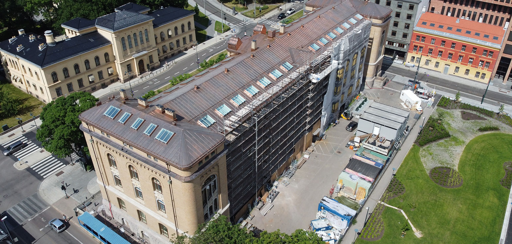
LevertUiO Historisk Museum
Bygget av Henrik Bull (1897–1902), fredet kulturminne. ~2 000 m² tak, 40+ km mørtelfuger og ~600 vindusrammer restaurert mens museet er i drift.
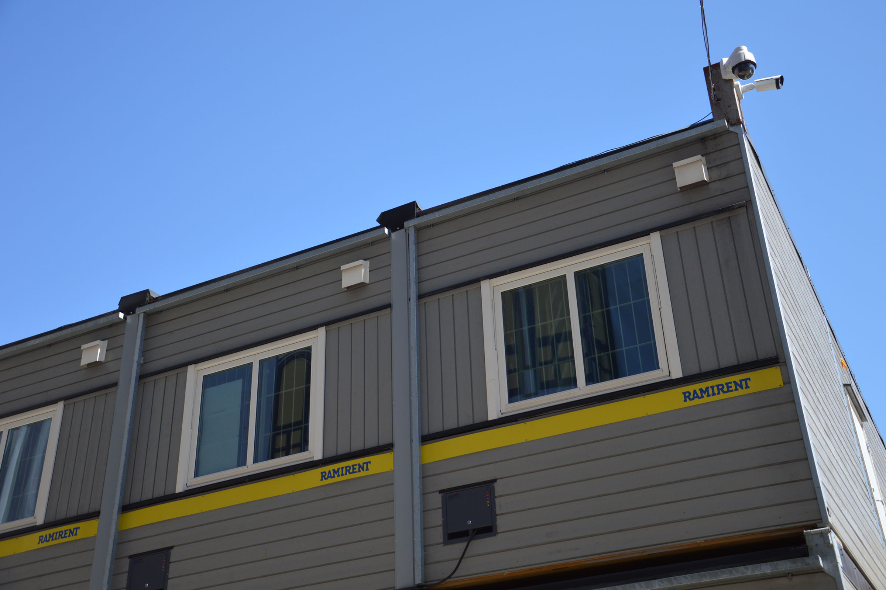
Levert · 2014–2021Nytt Nasjonalmuseum
Nordens største kunstmuseum. 148 brakkerigger, ~2 km skallsikring, hovedansvar fra august 2019.
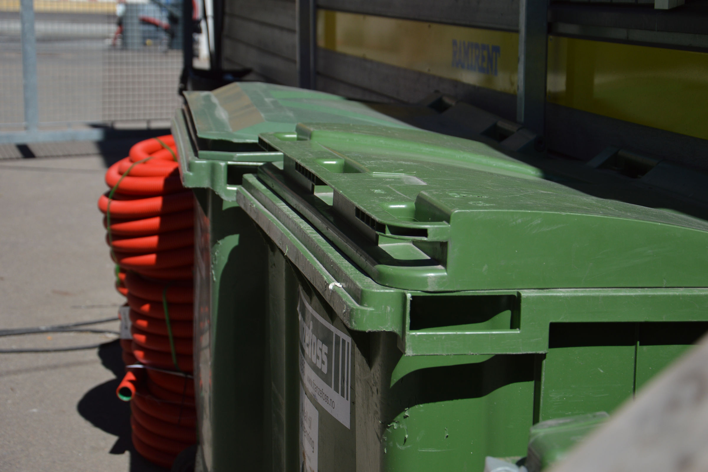
Levert · 2004–2011Akershus Universitetssykehus
Riggentreprise på nytt sykehus ved siden av eksisterende sykehus i full drift. Største kontrakt på siden.
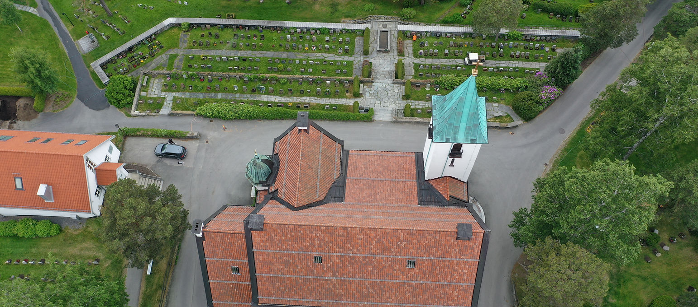
Levert · 2012Bekkelaget Kirke
Steinkirke fra 1920-tallet, tegnet av Harald Bødtker. Tak & fasade.
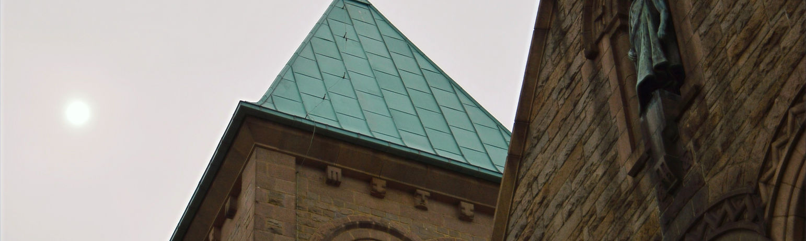
Levert · 2016–17Frogner Kirke
Tegnet av Ivar Næss, 1907. 11,6 MNOK · 2016–2017.
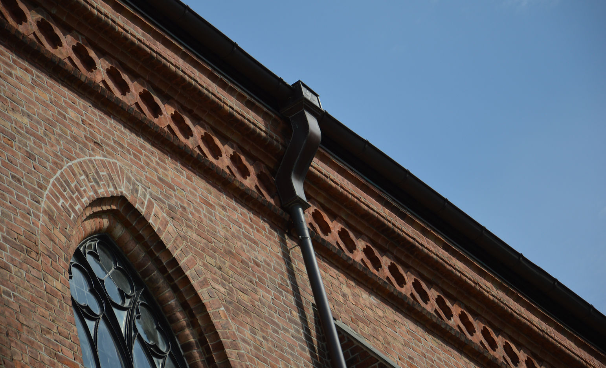
Levert · 2014–16Fredrikstad Domkirke
Eneste kirke i landet med fyrlykt i tårnet. Tegnet av Waldemar Lühr, 1880-tallet. 24 MNOK · 2014–2016.
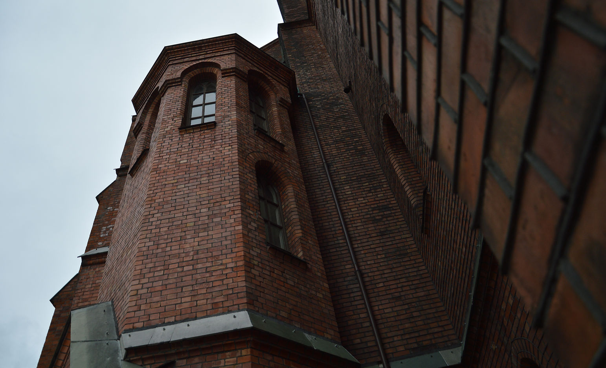
Levert · 2007–10Uranienborg Kirke
1880-tallet, tegnet av Balthazar Lange. 16,5 MNOK · 2007–2010.
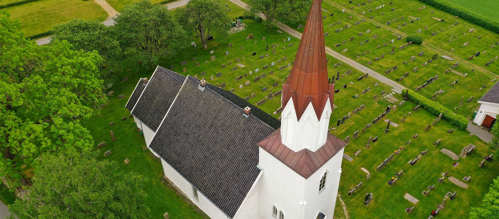
Levert · 2017 · FredetKråkstad Kirke
Antikvarisk tak- og tårnarbeid på trekirke utenfor Oslo.
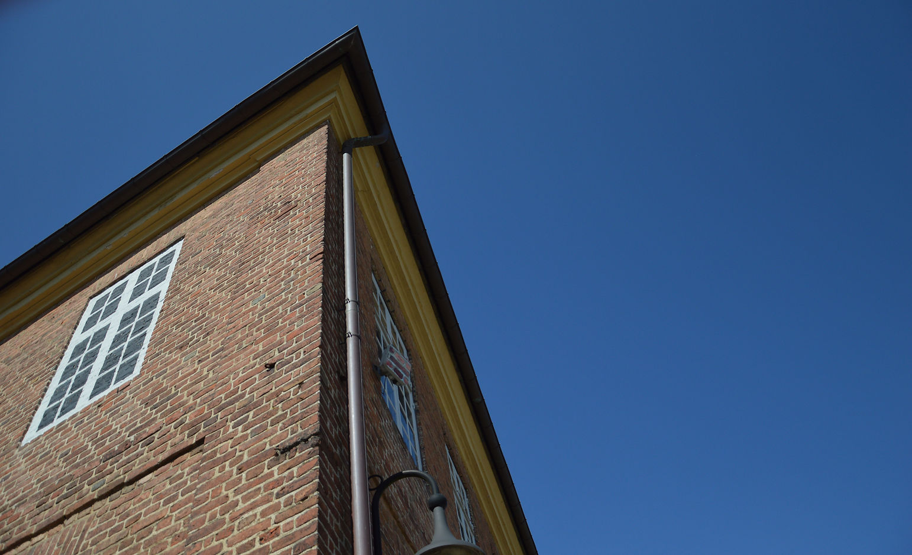
Levert · 2013–15 · FredetFredrikstad Infanterikaserne
Et av de flotteste vi har av militær arkitektur i Norge — sentralt på torget i Gamlebyen. 23,5 MNOK · 2013–2015.
Holmenkollen
Ytre sikring, adgangskontroll, lysmaster og snøproduksjonsanlegg. Beredskap under prøve-VM 2010. 57,5 MNOK.
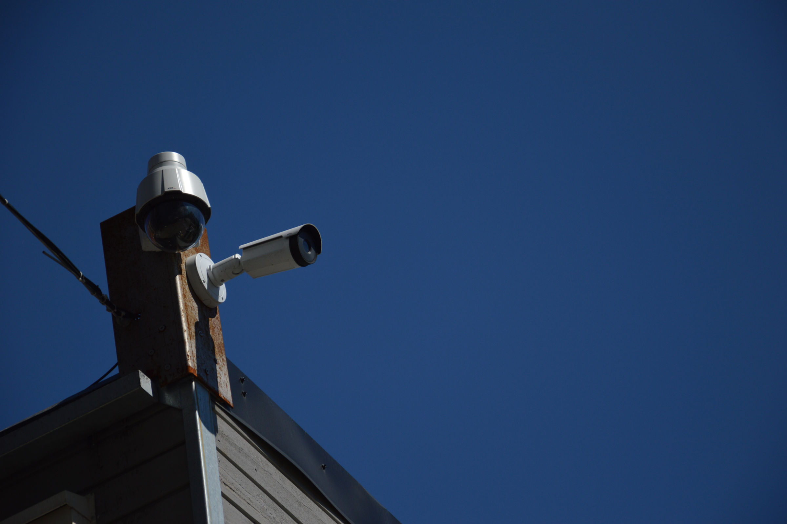
Levert · 2015–2020Campus Ås
Byggherrerigg — ytre sikring, adgangskontroll, veier, plasser, provstrøm. 43 MNOK.
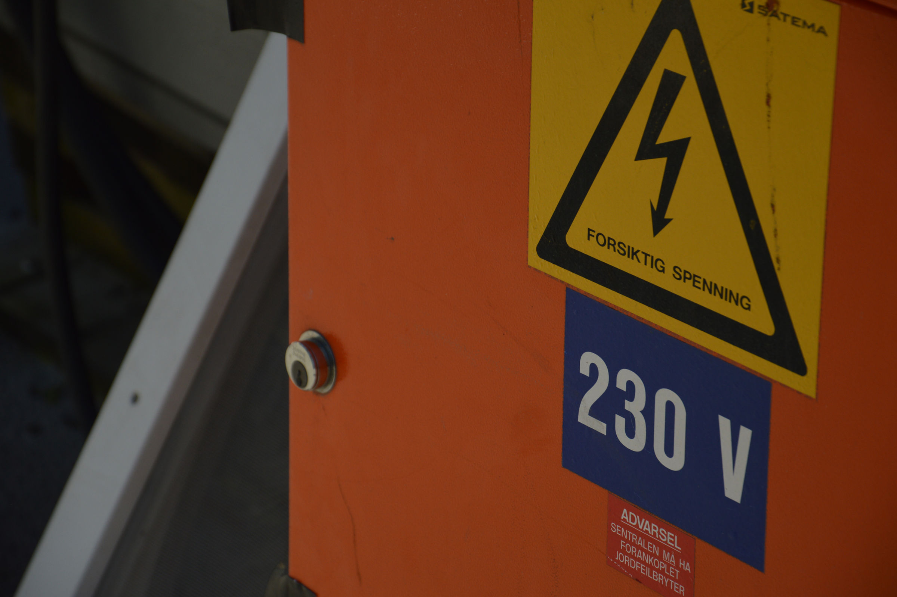
Levert · 2012–2015Østfold Sykehus — Kalnes
Byggherrens fasiliteter, brannvern og rømningsveier i nybygget, ytre sikring og kameraovervåkning, og daglig riggedrift. 125 MNOK.
Ingen treff
Vi fant ingen prosjekter på det filteret. Prøv et annet søk eller velg «Alle» igjen.
Et fagmiljø som har levert siden 1992.
Vi tar oppdrag for store eiendomsbesittere, det offentlige og selvstendige eiendomsutviklere. Hver referanse her speiler et samarbeid med Riksantikvaren, Forsvarsbygg, Statsbygg eller Helse Sør-Øst — og et fagmiljø som kjenner faget på dypet.